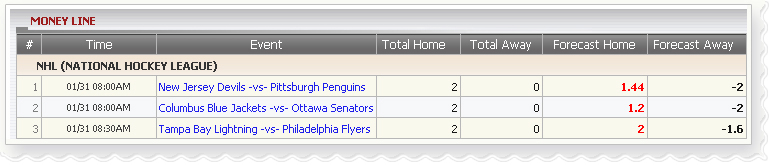

Money Line
Definition:
Show agent’s win/loss based on position taking for tickets which have bet type:
MoneyLine

Money Line
Term definition
- Total Home: Total agent's earning amount from member stake based on PT if Home team is selected to place bets.
- Total Away: Total agent's earning amount from member stake based on PT if Away team is selected to place bets.
- Forecast Home: The amount that agent might lose if members win the bet with their choice (Home team)
- Forecast Away: The amount that agent might lose if members win the bet with their choice (Away team).
In the figure above, we have the following bet details:
- 1st bet: stake = 10, odds = 0.72, choice = Home team (New Jersey Devils), agent PT = 20%
-->Total home = stake* agent PT = 10*20% = 2
--> Total away = 0
--> Forecast home = stake * odds * agent PT = 10* 0.72* 20% = 1.44
--> Forecast away = stake * agent PT = 10* 20% = 2
- 2nd bet: stake = 10, odds = 0.6, choice = Home team (Columbus Blue Jackets), agent PT = 20%
-->Total home = stake* agent PT= 10*20% = 2
--> Total away = 0
--> Forecast home = stake * odds * agent PT = 10* 0.6* 20% = 1.2
--> Forecast away = stake * agent PT = 10* 20% = 2
- 3rd bet: stake = 10, odds = -0.8, choice = Home team (Tampa Bay Lightning), agent PT = 20%
-->Total home = stake* agent PT = 10*20% = 2
--> Total away = 0
--> Forecast home = stake*1*agent PT = 10*1*20% = 2
--> Forecast away = stake * odds * agent PT = 10* 0.8* 20% = 1.6
Note:
- If Odds < 0 then:
- Winning amount = stake * 1
- Losing amount = stake * odds